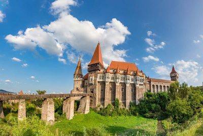

Top 3 Places to Visit in Transylvania, Romania

I was born in Romania, and at 4 years old I moved to the US where I have
lived for over 15 years, but every chance I get, I travel back to my home
country and I visit as many historical and natural sites as possible. My
top 3 favorite sites and places I've been, and I recommend to anyone traveling
for their first time to Romania, more specifically the Transylvanian region,
are the following:
- Corvin Castle, Hunedoara
- Balea Lac/Transfagarasan, Cartisoara
- Salina Turda, Turda
To begin with my favorite destination in Transylvania, the Corvin Castle,
I've always had a connection to this place ever since I was 3, as it was the
first place I remember visiting as a child. I was always facinated with medieval
knights and castles, and as far as medieval castles in Eastern Europe go, I think
this is a very underrated and lesser known wonder, primarily becuase of the rich
history and the way it's been beautifully restored and maintained. It stands as
one of the best examples of Gothic architecture in Eastern Europe, and I would say
it's also one of the most beautiful castles in the world. Besides its beauty one of
the best features about this castle, is that it's almost 100% explorable, with visitors
allowed to see almost every part of the castle. Wanna see the royal bedrooms? Go right
ahead. Wanna see the view from the main tower? Why not take a selfie while you're up
there? It's overall a fantastic experience and regardless of your age, everyone can't help
but feel like they're a kid again when they visit this magnificient castle.
The next destination I strongly recommend for anyone traveling to Transylvania, is
Balea Lac, and the Transfagarasan(the mountain upon which the lake is located).
This lake and mountain are one of the most beautiful combinations that nature has
made in Romania. At the top of one of the tallest mountains in Romania, this lake
is a clean and beautiful sight for the travelers once they reach the peak. Besides
the crystal clear and beautiful lake, the perhaps more magnificient thing about this
place is the view from the top of the mountain. You look upon the mountain ranges and
roads leading up to the mountainn, and you can see shepards with flocks of sheep, the
nearby cities and the beautiful waterfall that falls from the lake. This place is more
than a breath of fresh air in this busy and crazy world, and reminds us how beautiful
nature is. No one will ever be disappointed to visit this natural wonder of Romania.
The last recommendation on my list is called Salina Turda, a salt mine located in the
city of Turda. This natural mine has been excavated decades ago, producing salt for
Romania, and once mining operations were halted the mine was turned into a wellness
center and tourist location. After entering the mine, and going down long tunnels you
reach the main excavation area, that is over 400 feet deep, where you see a ferris-wheel,
small cafes, and a boat ride in the naturally formed lake in a crevise of the mine.
Besides visiting the mine for fun, there are many people who visit this mine for wellness
as the air in the mine is heavily salinated, and helps with lung problems and infections.
This is one of the most unique experiences I've ever had in Romania, and I would recommend
it to anyone who wants to visit a cave turned amusement park, or someone who is looking
into halotherapy(healing through breathing salinated air).